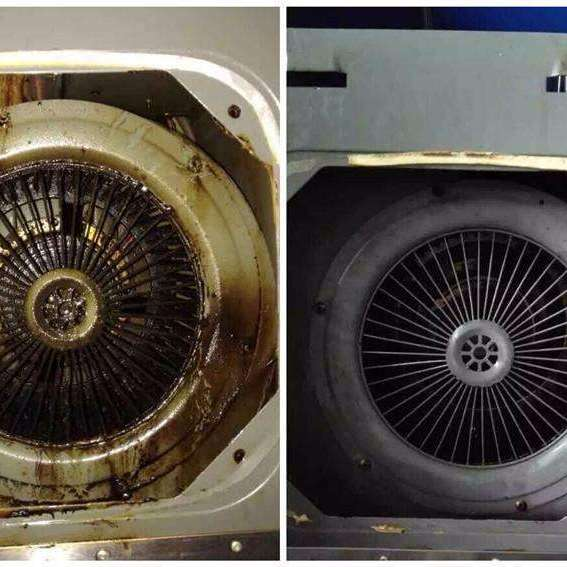

抽油烟机是厨房必备的家电之一，在长期的使用过程当中，油烟机会变得满是油污，沾满油渍，清洗油烟机势在必行。但很多人其实并不清楚该如何简单有效的清洗抽油烟机，今天，小编就为大家介绍一下简单又省力的抽油烟机清洗方法吧。 清洗抽油烟机主要清洗四大部分：机身、叶扇、滤网以及储油盒。其中滤网清洗比较麻烦，我们先来看看抽油烟机滤网如何清洗吧。 1.先烧开水 软化长期凝固油脂窍门：在灶台上用锅烧开水不锅盖，水开之后水蒸汽自然的飘散在抽油烟机上，起到溶解油渍的作用。 解决问题：家用抽油烟机长时间不清洗的话，过滤网的油渍就会凝结在一起，不容易洗掉，所以在清洗之前，我们需要做一些准备工作。例如：用热气将油脂软化。 2.拆下过滤油网 简便方法：一般油烟机滤网都是有四颗螺丝钉固定，先把储油盒取下来，然后找准螺丝钉拧下来就可以了。 存在问题：也许以前我们只是注重抽油烟机的外部清洁。而忽略了里面。抽油烟机滤网的里外都覆有厚厚的油渍，我们需要把它拆下来清洗。 3.滤网浸泡及清洗 清理油渍小窍门：食醋、强碱和洗洁精的使用 解决问题：拆解下来的滤网因为长时间的油渍，积累了很厚的油渍，我们需要使用食醋、强碱、洗洁剂等稀释浸泡十分钟， 才能方便清洗。这里需要用热水，才能发挥更好的作用。而且，碱对皮肤的腐蚀性强，一定要稀释过后才能浸泡哦。 清洗时，我们再加入一些除油剂，这样才能更彻底的清除油渍。如果有顽固油渍的话，我们可以用刷子或者钢丝球，进行清理。 4.擦拭洗洁精 护理滤网小窍门：涂抹洗洁精 解决问题：滤网擦拭干净后，在表面涂抹一层洗洁精，在下次清理的时候可以更容易和方便。这里值得注意的是，清理时间间隔不能太长，否则也没有效果。 抽油烟机叶扇和储油盒清洗 扇叶和储油盒也是非常重要的部分。我们在清理完扇叶时，可以在表面涂抹一层洗洁精或者办公用胶水，这样可以让我们下次清洗起来更方便。还有一种方法叫做洗洁精和食醋混合浸泡法，将扇叶放在洗洁精和食醋混合的温水中(3-5滴洗洁精和50ml食醋)，浸泡10-20分钟后，用干净抹布擦拭,效果非常不错。而储油盒，我们则可以在里面放一些肥皂水，这样可以让流下了的油渍得到有效的隔离，方便清理。 机身清洗*简单，和我们平时清洗其他厨房用品一样。将洗涤剂均匀涂在抹布上，然后擦洗机身，再用热的湿抹布擦拭即可。 因为热的湿抹布去油效果更好。
- 